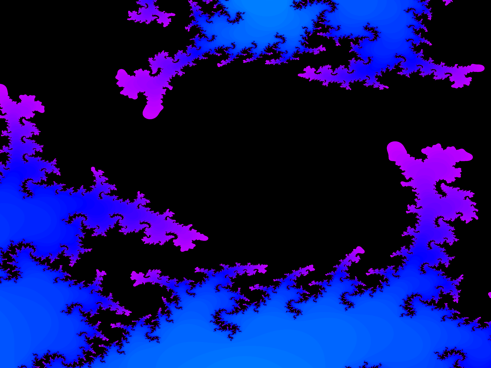
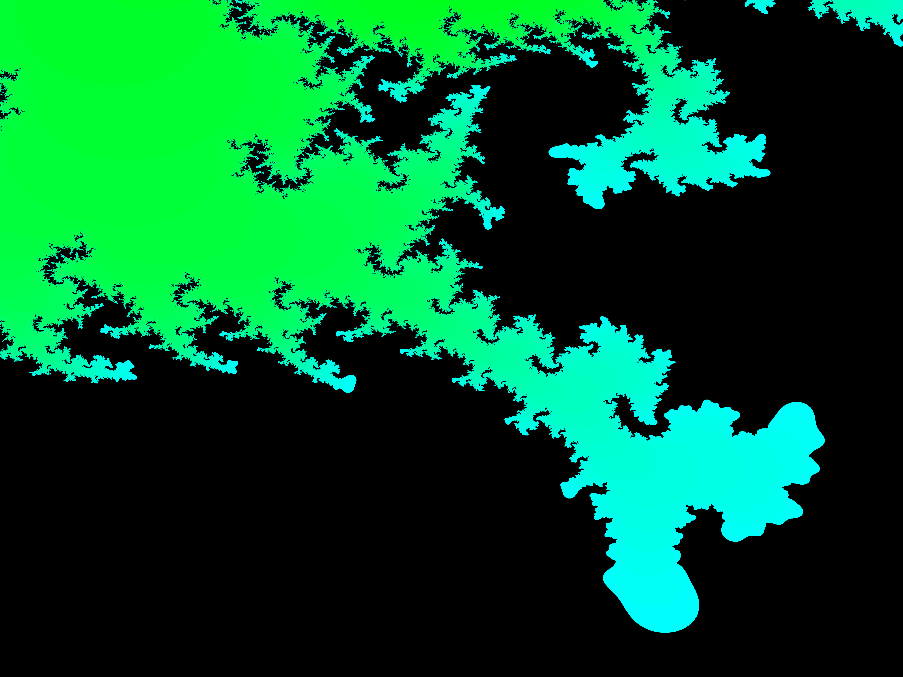
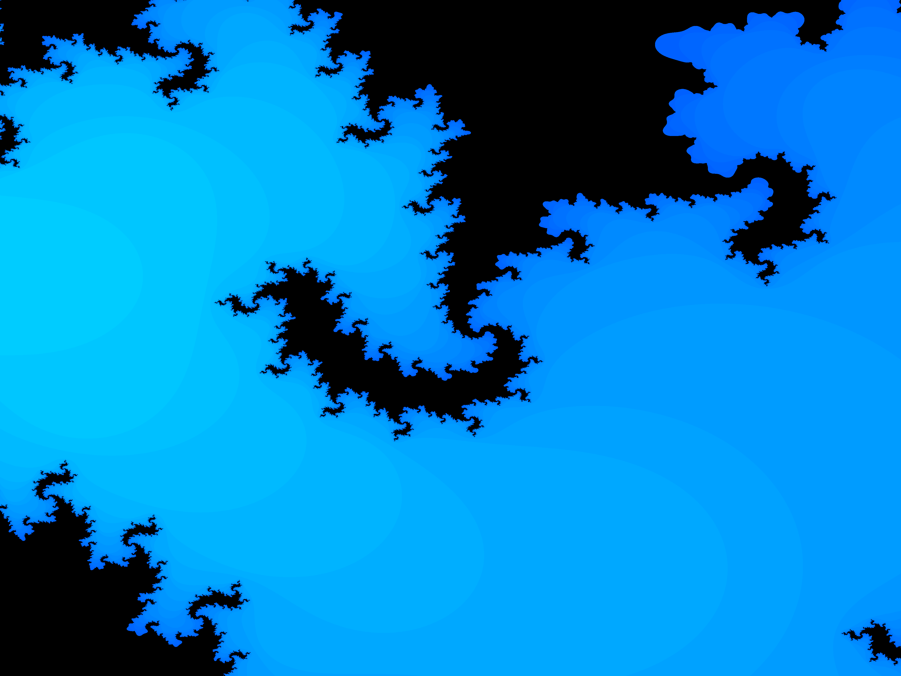
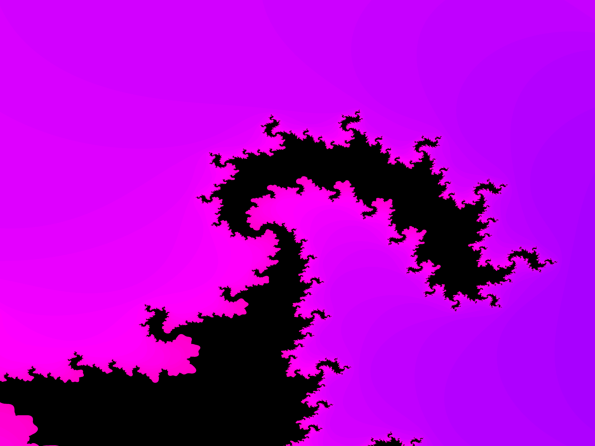

Mandelbrot Set Drafts
Artist: Patrick Schröder
Year: 2022 - 2024
Medium: Digital files
Size: Various resolutions of images
The Mandelbrot set marks the beginning of my digital art journey. I have created many drafts, which are presented here and on Instagram. I am still experimenting with various zoom levels, colored using RGB or HSV functions.